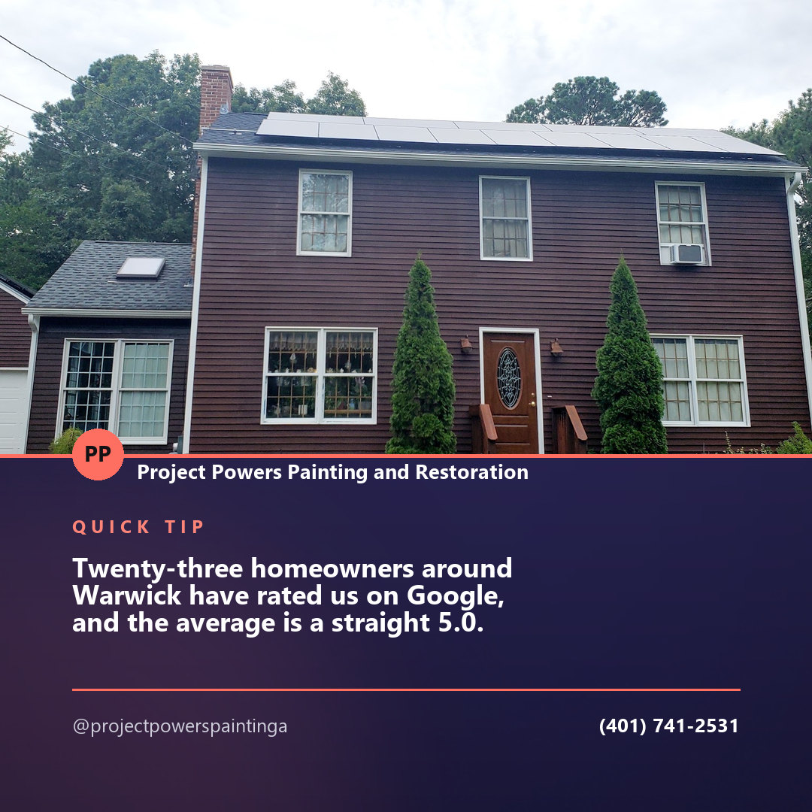
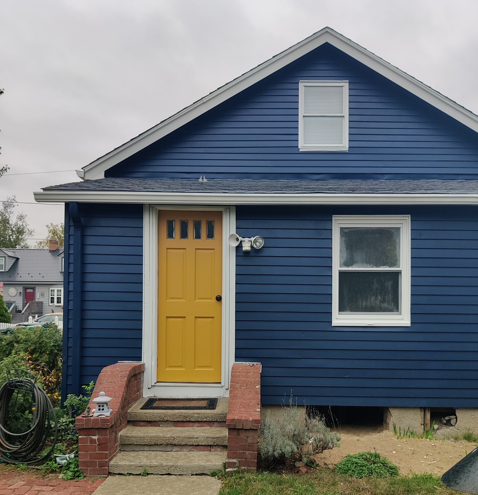
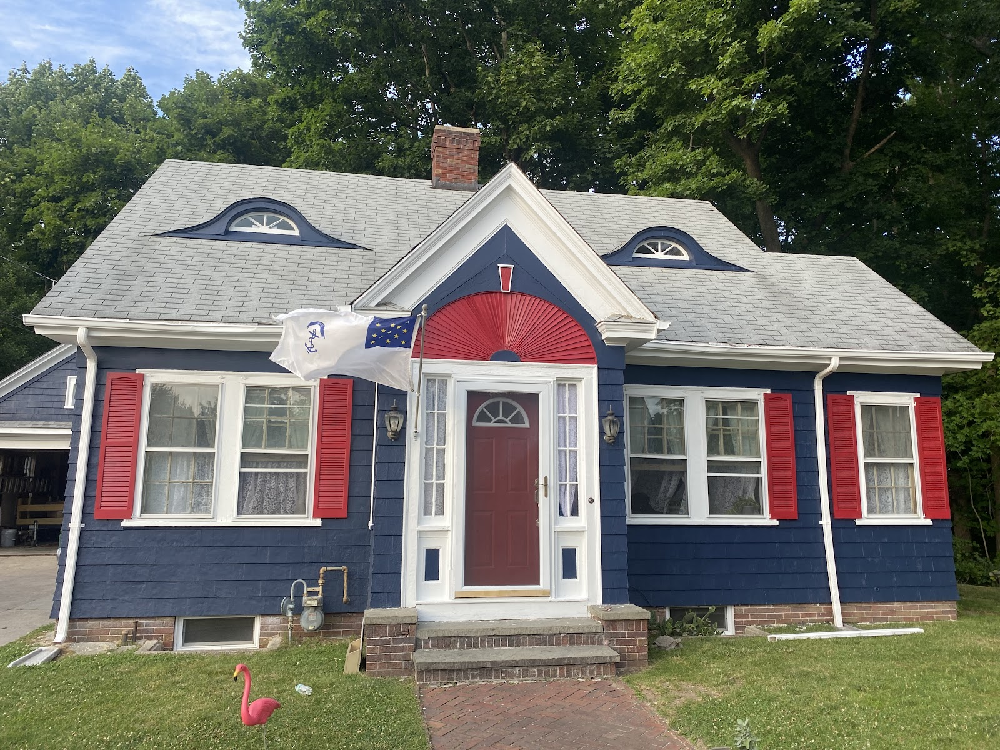
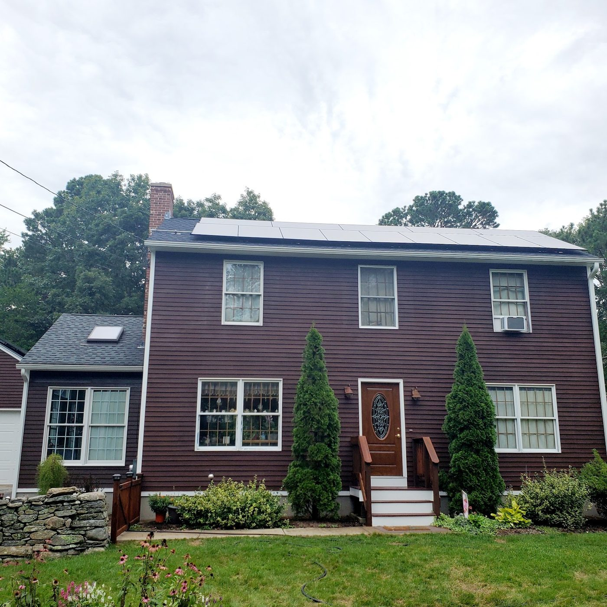
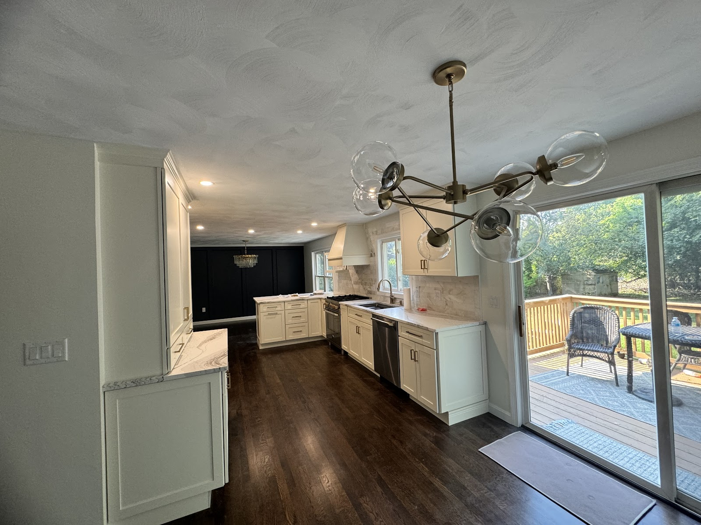

Social proof · Instagram
Twenty-three homeowners around Warwick have rated us on Google, and the average is a straight 5.0. Interior and exterior, registered and insured. Call (401) 741-2531 for a free estimate.
Project Powers Painting and Restoration paints houses inside and out — and kitchen cabinets — around Warwick. Registered and insured, contractor # GC-49284. Tell us about your project and the estimate is free.

Do you need your entire house painted? Or maybe just a few rooms? Whatever your project, we are here for you.
We understand that not everyone has a nine-to-five schedule. We are very flexible and will work the schedule that best suits you — we will discuss dates and times that are suitable for you, day or night.
Three kinds of job, and they are not the same job. Each one has its own prep, its own product, and its own way of going wrong if it's rushed.
Siding, trim, shutters, doors, porches — the surfaces taking every winter and every August the state can produce.
A repaint is what stands between a house that reads as tired and the same house reading as looked after.
Walls, ceilings, trim, doors. A whole house at once, or one room you have been meaning to deal with for two summers.
Furniture moved and covered, edges cut clean, and the room put back the way we found it.
The biggest painted surface in the room and the one everybody puts their hands on ten times a day.
Cabinets are their own discipline — done properly they change the whole kitchen without touching the boxes.
“Aside from being house painters, we are also Artists. Color is our life.”
When it comes to color, we are experts. If you are unsure what colors you would like to use, we will work with you and help you decide which will work best for your space.
Most people know what they don't want long before they know what they do. That is a normal place to start, and it is a conversation, not a form.
Warwick and around it — exteriors that had to hold up outside, and interiors that had to look right in daylight.



Tell us about your project — the whole house or a few rooms. Your project is important to us, and it is our goal to ensure satisfaction in the final product.
(401) 741-2531Content